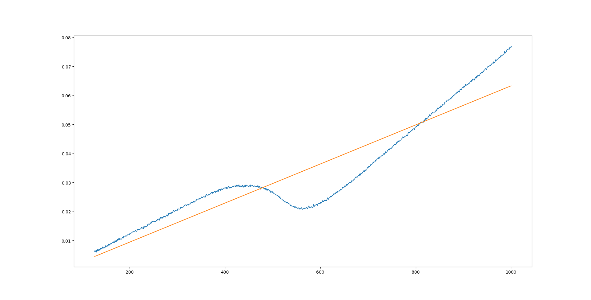
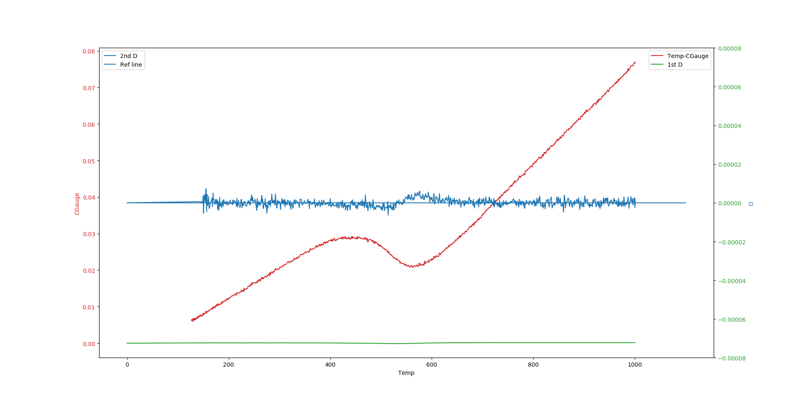
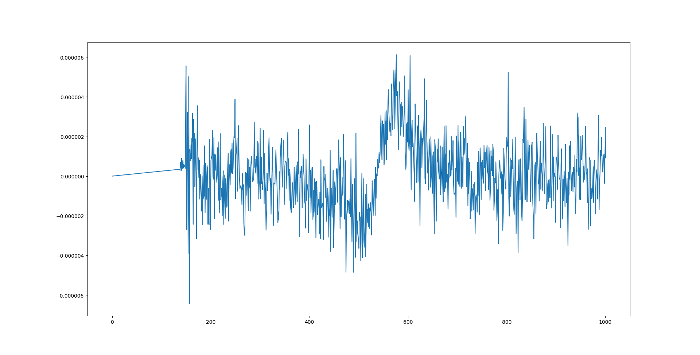

不冷曲线
步冷曲线的获得为使用K型热电偶测量，实验条件为：
将试样加热至1000℃，采用5、10、20、50和自由冷却的方式冷却至室温
数据处理部分均以20℃/s的为例（其实是感觉只有这个的数据处理能看:(
数据处理
对曲线使用了最小二乘法，一阶差分，二阶差分(好像应该写导数)
最小二乘法
对于整体曲线使用最小二乘法进行回归分析（好像没什么意义，找不出想要的线性部分）。代码见下，拟合结果见图
1 | import numpy as np |

一二阶导
对离散数据点求“导”，希望找到导数不变的部分即原始数据中的线性部分，以此来求出整个冷却过程的中相变点。
1 | import numpy as np |

通过图片可以明显看出在相变前，曲线的二阶导在0附近波动（感觉这地方还是处理下会好看点，但这样是不是就算某种程度上修改数据:(。
精进？
又改了下代码，把求导数的部分写成了一个函数，方便对不同组数据的使用。代码见下(另不改y轴范围，不对曲线进行处理，这数据能看？？？做啥研究，上哪门子学回家卖红薯把(╬▔皿▔)凸
1 | import numpy as np |
